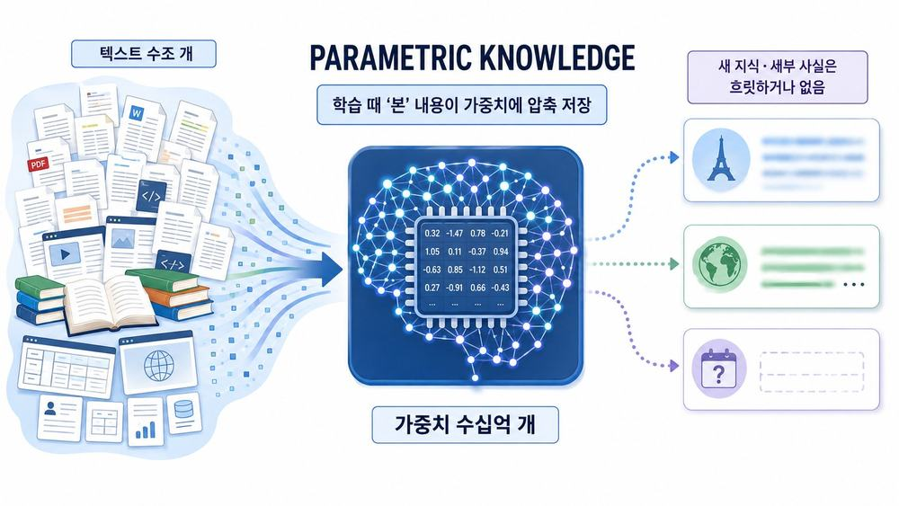
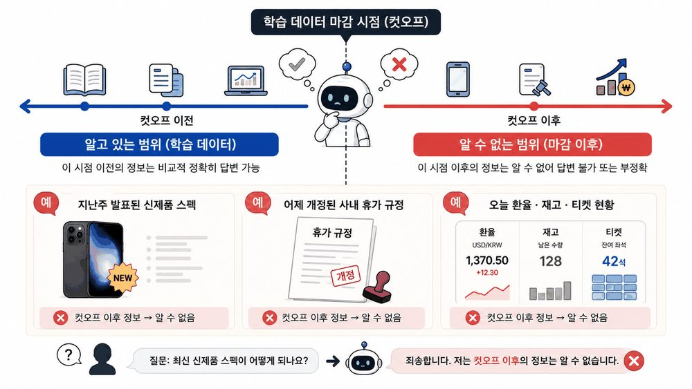
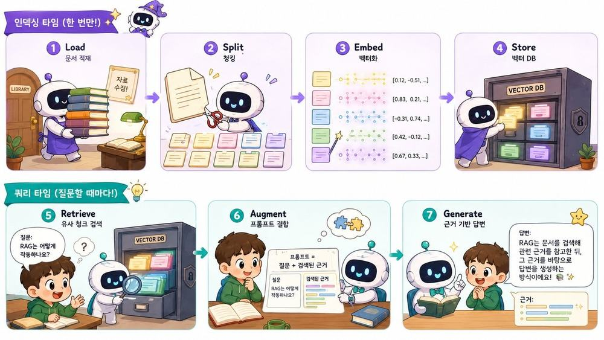
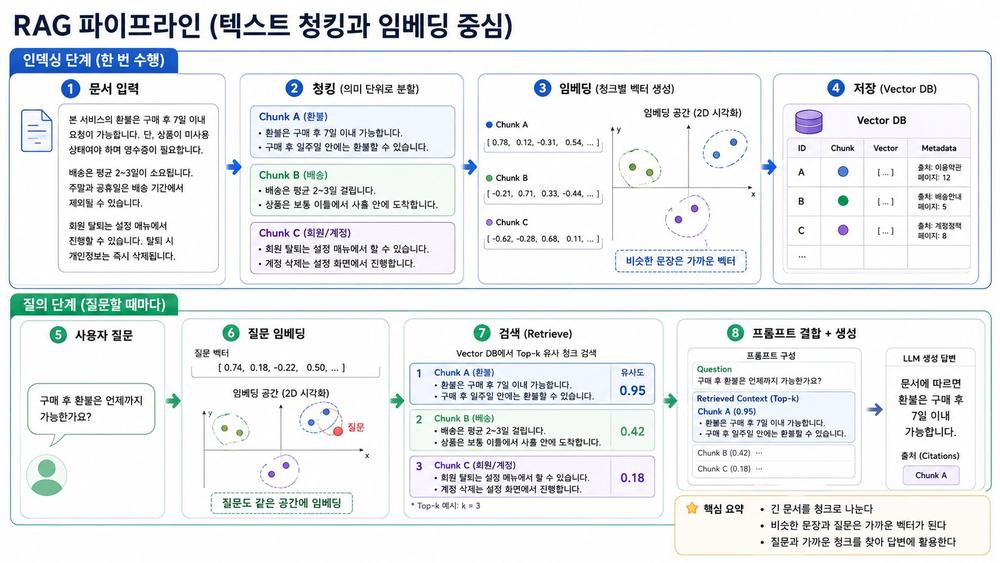
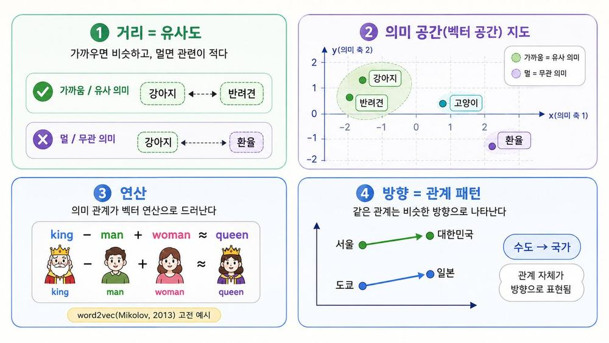
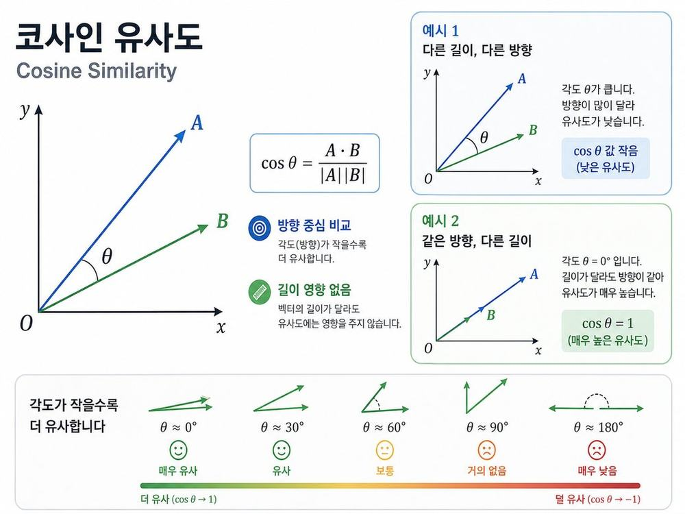
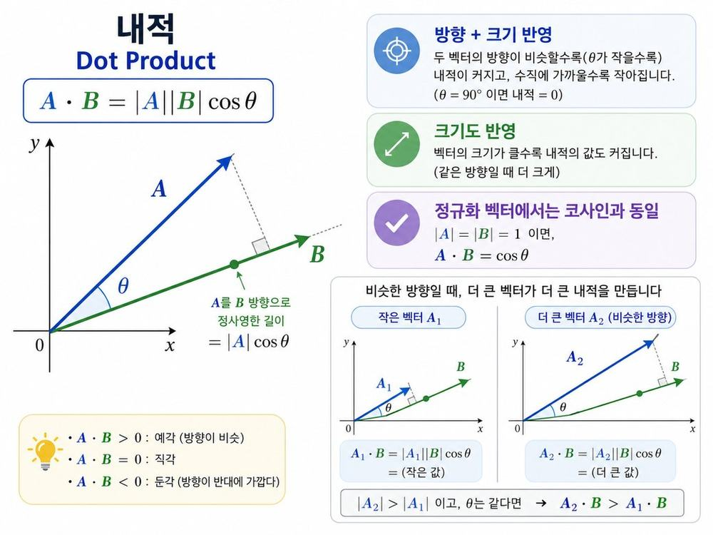
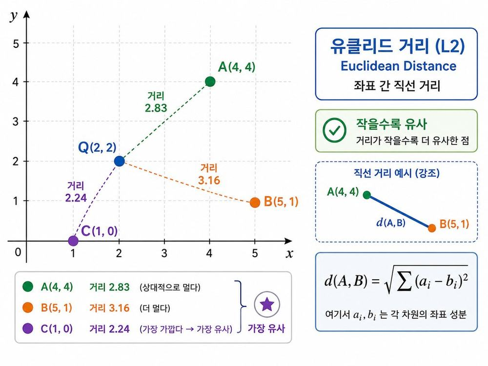
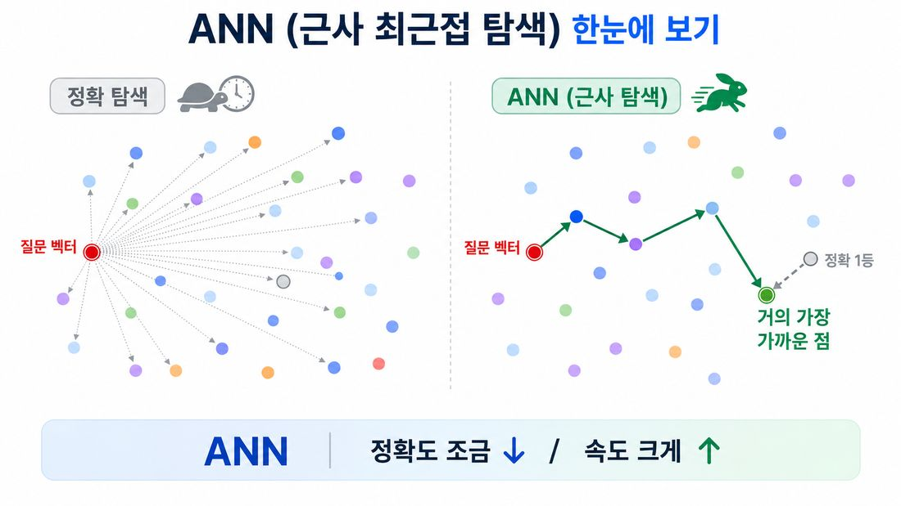
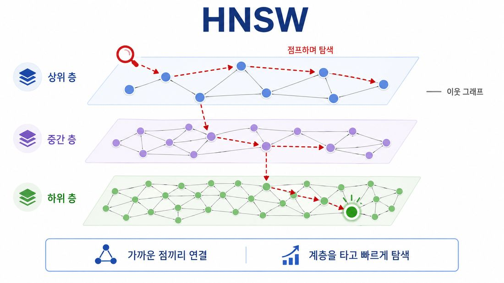

내 문서로
답하게 하기
오늘의 일정
환각
모델은 모른다고 말하지 않는다. 빈칸을 그럴듯한 말로 메운다.
청킹
문서를 통째로 못 넣는다. 어디서 자르느냐가 검색을 가른다.
임베딩과 인덱싱
의미를 좌표로 바꿔 미리 쌓아 둔다. 여기까지가 질문 전에 하는 일이다.
쿼리 타임
질문마다 찾아 붙이고 그 안에서만 답하게 한다.
왜 문서를 붙이나
잘하는 것과 여전히 못 하는 것
✓ 잘하는 것
언어 이해·요약·번역·코드 생성, 추론과 형식 변환, 자연스러운 대화. ‘일반적 지식’을 유창하게 다룬다.
✕ 여전히 약한 것
최신 사실, 사내 고유 데이터, 출처 제시, 정확한 수치/규정. 모르면 지어낸다.
“LLM을 CPU라 하면, 외부 지식은 RAM이다.
필요한 정보를 그때그때 ‘맥락’으로 올려줘야 한다.”
모른다는 답이 없는 구조
모델은 ‘모른다’고 말하도록 설계돼 있지 않다
가장 그럴듯한 다음 토큰을 잇다 보면, 빈칸을 ‘지어내며’ 메운다.
희귀·구체적 사실에서 특히 취약
드물게 본 고유명사·수치·날짜는 비슷한 다른 값으로 대체되기 쉽다.
유창함이 오류를 감춘다
문장이 매끄러워 사람이 사실로 착각한다. 가장 위험한 실패다.
법원에 낸 존재하지 않는 판례
챗봇이 약속한 없는 환불 규정
계수 안에만 있는 지식
RAG의 처방
계수 안이 아니라 바깥 문서를 검색해 ‘근거’로 제공.

학습이 끝난 날에 멈춘 지식

RAG의 처방
지식이 바뀌면 모델을 다시 학습할 필요 없이 문서(인덱스)만 갱신하면 끝.
모르는 사내 문서, 못 대는 출처
사내·도메인 지식 부재
공개 자료로 학습해서 사내 문서·계약·고객 데이터는 알 수 없다.
출처 제시 불가
“근거가 뭐냐”에 답 못 함 → 검증·신뢰·규정 준수가 어렵다.
RAG의 처방
검색한 문서 조각을 근거로 제시 → 출처(provenance)가 생기고, 사내 지식을 안전하게 활용.
2020년 논문 한 편에서 시작
2020년, “Retrieval-Augmented Generation” 논문이 검색 + 생성을 결합하는 방식을 제안. 지금 나오는 문서 기반 AI 는 대부분 이 뼈대를 쓴다.
Lewis et al., 2020
“Retrieval-Augmented Generation for Knowledge-Intensive NLP Tasks”. RAG라는 이름과 구조의 출발점.
목표
이 구조를 분해해서 이해하고, 직접 만들어 검색 품질을 손으로 느낍니다.
RAG 한눈에
찾아온 근거 안에서만 답하기
Retrieval-Augmented Generation. 질문이 오면 관련 문서를 먼저 검색해 프롬프트에 붙이고, 그 근거 안에서 답을 만든다.
비유: 오픈북 시험
모델 = 똑똑한 학생, 검색 = ‘책 펼치기’. 외울 필요 없이 필요한 페이지를 찾아 답한다.
시험지 대신 참고서를 펴는 일
정확성 · 최신성 · 출처
① 정확성↑ · 환각↓
근거 문서 안에서 답하게 해 ‘지어내기’를 억제.
② 최신성
문서만 갱신하면 즉시 최신 지식 반영.
③ 신뢰·출처
어디서 온 답인지 제시 → 검증·규정 준수 가능.
일곱 단계

환불 정책 문서로 따라가기

미리 한 번 · 질문마다 한 번
인덱싱 타임 (사전 1회)
문서를 적재·청킹·임베딩해 벡터 DB에 적재. 문서가 바뀔 때만 다시 수행. 느려도 괜찮다.
쿼리 타임 (질문마다)
질문을 임베딩 → 검색 → 프롬프트 결합 → 생성. 빠른 응답이 중요. 사용자마다 매번 실행.
사실은 RAG · 말투는 파인튜닝
실무 권장
문서 기반 Q&A는 RAG부터. 말투·형식 일관성이 중요해지면 파인튜닝을 추가.
비유: 잘 훈련된 직원
신입 교육(파인튜닝)으로 회사 말투·업무 방식을 ‘몸에 익힌’ 직원이, 매일 바뀌는 사내 규정은 오픈북(RAG)으로 그때그때 확인해 답한다. 둘 다 있어야 ‘일 잘하는 직원’.
프롬프트 · RAG · 파인튜닝
| 방법 | 가중치 | 주입 대상 | 데이터·비용 | 지식 갱신 | 출처 |
|---|---|---|---|---|---|
| Zero-shot | 그대로 | 행동(지시) | 없음 · 낮음 | 즉시 | 부분 |
| Few-shot | 그대로 | 행동·패턴 | 예시 2~5개 · 낮음 | 즉시 | 부분 |
| RAG | 그대로 | 지식(사실) | 문서 · 중간 | 즉시(문서 갱신) | 있음 |
| Long-context | 그대로 | 지식 | 토큰비용↑ | 매번 전체 투입 | 부분 |
| 파인튜닝(LoRA) | 변경 | 행동·톤 | 학습셋 · 높음 | 느림(재학습) | 없음 |
고르기 전에 던지는 다섯 질문
프롬프트만으로 되나?
먼저 zero·few-shot로 시도. 90%가 나오면 RAG도 파인튜닝도 필요 없다. 과설계는 금물.
‘무엇을 아는가’ vs ‘어떻게 행동하나’
사실·문서·데이터(What) → RAG. 말투·형식·추론 스타일(How) → 파인튜닝.
데이터가 얼마나 자주 바뀌나
매주 이상 변함 → RAG. 분기 이하로 안정적 → 파인튜닝도 가능.
출처(근거)를 대야 하나
규정·의료·금융처럼 인용이 필요하면 → RAG(파인튜닝은 출처를 못 댄다).
고품질 예시가 500+ 있나
있으면 파인튜닝이 현실적. 없으면 프롬프트·RAG로.
적재와 청킹
PDF · 웹 · 노션 · DB
파일
PDF · DOCX · TXT · Markdown · HTML.
웹
웹페이지 · 위키 · 블로그 크롤링.
협업툴
Notion · Confluence · Google Docs.
DB·API
RDB 레코드 · 사내 API 응답.
핵심
형식이 달라도 결국 ‘텍스트 + 메타데이터’로 정규화. LangChain의 Loader가 이를 담당.
통째로 넣을 수 없는 세 가지 이유
컨텍스트 윈도우 한계
긴 문서를 다 넣을 수 없어, 필요한 조각만 골라 넣어야 한다.
검색 정밀도
작은 단위로 나눠야 ‘질문과 정확히 맞는’ 부분을 집어낼 수 있다.
비용·속도
관련 없는 텍스트를 빼면 토큰·지연·환각이 함께 줄어든다.
비유: 백과사전의 색인
한 낱말을 찾으려고 백과사전을 통째로 읽지는 않는다. 항목별로 잘라 색인해 두었기에 해당 쪽만 펼치죠. 청킹은 문서에 찾을 수 있는 단위를 만드는 일이다.
고정 · 재귀 · 시맨틱 · 구조 · 에이전트
고정 크기
N글자마다 자른다. 단순하지만 문장·문단을 자른다.
재귀적 분할
문단→문장→단어 순으로 경계를 존중하며 자른다.
시맨틱
임베딩 유사도로 ‘주제가 바뀌는 지점’에서 자른다.
구조 기반
Markdown 헤더·HTML 태그 등 문서 구조로 자른다.
부모-자식
작은 조각으로 검색하고, 답엔 큰 부모 문맥을 제공.
문단 → 줄 → 문장 → 단어
구분자 우선순위(문단 → 줄 → 문장 → 단어)대로 최대한 큰 의미 단위를 유지하며 자릅니다. 실무 기본값.
from langchain.text_splitter import (
RecursiveCharacterTextSplitter)
splitter = RecursiveCharacterTextSplitter(
chunk_size=500,
chunk_overlap=80,
)
chunks = splitter.split_documents(docs)128 · 400 · 1000 토큰의 차이
정밀하지만 단편적
‘딱 떨어지는 사실’ 질의에 유리. 단, 핵심이 쪼개지면 문맥이 끊긴다.
실무 기본값
재귀 분할 + 10–20% 겹침이 대부분의 출발점(예: 512토큰에 50–100 겹침).
맥락 넓지만 잡음
분석·종합형 질의엔 유리하나, 무관한 내용이 섞여 유사도가 흐려진다.
overlap — 무조건 좋은 건 아니다
경계에서 잘린 문맥을 이웃과 겹쳐 보존하지만(10–20% 권장), 일부 연구·셋업에선 효과 없이 색인 비용만 늘기도. ‘정답’이 아니라 내 데이터로 측정할 값.
80자와 300자로 잘라 보기
과제
from langchain.text_splitter import (
RecursiveCharacterTextSplitter as Splitter)
text = open("sample.txt").read()
for size in (80, 300):
c = Splitter(chunk_size=size,
chunk_overlap=0).split_text(text)
print(size, len(c), c[0][:30])관찰 포인트
작게 자를수록 청크 수↑·정밀도↑지만, ‘사람이 읽어 말이 되는’ 경계가 깨지기 쉽다. 적정점은 데이터마다 다르다.
표와 코드는 통째로
✓ 권장
· 문단·섹션 경계를 존중
· 표·코드블록은 통째로 유지
· 메타데이터(제목·출처·페이지) 부착
· 도메인에 맞춰 size 실험
✕ 안티패턴
· 문장 한가운데서 절단
· 표를 행 단위로 흩어버림
· 모든 문서에 같은 size 강제
· 제목과 본문을 분리
한 가지 규칙만 기억한다면 — ‘사람 가독성 규칙’
한 청크를 주변 맥락 없이 사람이 읽어서 말이 되면, LLM 에게도 대체로 말이 된다. 중간에 시작하는 문장, 반토막 난 표, 제목 잃은 항목 같은 최악의 실패를 거의 다 잡아냅니다. ‘RAG가 안 된다’의 상당수는 검색기가 아니라 청크가 원인.
임베딩
의미를 좌표로 바꾸기
벡터 공간에 놓인 문장들

수백에서 수천 개의 축
임베딩 벡터는 보통 수백~수천 차원. 각 축이 의미의 한 갈래처럼 쓰인다. 무슨 갈래인지는 사람이 알 수 없다.
흔한 실수
인덱싱과 검색에서 다른 임베딩 모델을 쓰면 좌표계가 어긋나 검색이 망가진다.
코사인 유사도 — 방향의 일치

내적 — 방향과 크기를 함께

유클리드 거리 — 두 점 사이의 직선

가까운 순서 맞혀 보기
과제 — 기준 문장과 가장 가까운 순서를 ‘직관’으로 예측
기준: “환불은 어떻게 받나요?”
“결제 취소 및 환불 절차 안내”
“배송은 보통 2~3일 걸립니다”
“반품 시 환불은 영업일 5일 내”
한국어에 쓸 만한 모델들
| 모델 | 특징 | 접근 |
|---|---|---|
| multilingual-MiniLM-L12 | 경량·CPU 친화, 다국어. 가볍게 시작할 때 | 로컬 |
| multilingual-e5 / ko-sroberta | 한국어·다국어 검색 강점 | 로컬 |
| BGE-m3 (오픈) | 고품질, 자체 호스팅 가능 | 로컬/호스팅 |
| OpenAI / Qwen3-Embedding | 품질 우수 — 규모 커지면 고려 | API |
선택 기준
언어(한국어!) · 도메인 적합성 · 차원·비용 · 한 번 정하면 인덱싱/검색 동일 모델 유지.
검색 품질의 천장
검색 품질의 ‘천장’
임베딩이 의미를 못 잡으면, 아무리 좋은 reranker·LLM도 못 살린다.
한국어 적합성
다국어·한국어에 강한 모델을 골라야 검색이 산다.
인덱싱=검색 동일 모델
같은 좌표계를 써야 ‘가까움’이 의미를 갖는다.
인덱싱 타임
전부 견주지 않고 찾는 법
전부와 하나씩 견주면 느리다. 벡터 DB는 근사 최근접 탐색(ANN)으로 사실상 곧바로 찾는다.
핵심 연산
“쿼리 벡터와 코사인이 가장 큰 Top-K 청크”를 반환한다. 이것이 RAG ⑤ 단계 그 자체다.
거의 1등을 아주 빠르게
ANN (근사 최근접)
‘정확히 1등’ 대신 ‘거의 1등’을 아주 빠르게 찾는다. 약간의 정확도를 내주고 속도를 얻는 방식이다.
HNSW (그래프 인덱스)
가까운 점끼리 ‘이웃 그래프’로 연결, 계층을 타고 점프하며 탐색. 널리 쓰이는 방식.
비유: 도서관에서 책 찾기
원하는 책을 찾으려고 서가를 처음부터 끝까지 다 보지는 않는다. 분류 기호로 해당 서가 근처까지 바로 간다. ANN도 ‘비슷한 것끼리 모아 둔 지름길’로 전수조사 없이 가까운 이웃을 찾는다.
정확 탐색과 근사 탐색

계층을 타고 점프하는 탐색

Qdrant · Chroma · pgvector
Qdrant (로컬 모드)
같은 API로 서버 없이 내 노트북에서 실행. path=로 디스크 영속.
Chroma
가볍고 프로토타입에 최적.
Milvus
대용량·고성능 분산 검색.
pgvector
PostgreSQL 확장 — 기존 DB에 통합.
Pinecone
완전 관리형 SaaS.
Weaviate
키워드+벡터 하이브리드 내장.
부서와 버전으로 범위 좁히기
벡터 검색에 메타데이터 필터를 더하면 범위를 좁혀 정밀도가 오릅니다.
왜 강력한가
“최신 HR 규정 중에서만” 의미 검색 → 구버전·타부서 잡음을 사전에 제거.
쿼리 타임
K 를 3에서 6 사이로
누락 위험
정답 청크가 Top-K 밖이면 답이 비거나 틀린다.
균형
핵심 근거는 담되 잡음은 최소.
잡음·비용↑
무관 청크가 섞이고 토큰·지연 증가.
검색기가 되어 Top-2 고르기
과제 — 질문에 대해 ‘검색기가 고를 Top-2’를 손으로 고르고 이유 적기
질문: “연차 휴가는 며칠 전에 신청해야 하나요?”
“연차 휴가는 사용 3영업일 전까지 사내포털에서 신청·승인.”
“경조 휴가는 사유 발생일로부터 7일 내 증빙 제출.”
“연차는 입사 1년 후 15일이 부여되며 매년 갱신된다.”
“사무실 운영시간은 사내포털에 공지한다.”
고유명사와 모호한 질문
키워드 정확 일치에 약함
고유명사·코드·약어는 ‘의미 검색’이 놓치기도 → Hybrid(BM25+벡터)로 보완.
모호한 질문
짧고 불분명한 질문은 검색이 흔들림 → Multi-Query·HyDE로 보강.
순위가 거칠다
유사도만으론 1등이 진짜 1등이 아님 → Reranker로 재정렬.
문서 안에서만 답하라는 지시
messages = [
{"role": "system", "content":
"아래 '문서'의 내용만 근거로 답해. "
"근거가 없으면 '문서에 없음'이라고 말해."},
{"role": "user", "content":
f"[문서]\n{context}\n\n[질문]\n{question}"},
]약한 지시와 단단한 지시
✕ 약한 프롬프트
“다음 자료를 참고해서 답해줘.”
✓ 단단한 프롬프트
“문서 안 내용만 근거로. 없으면 ‘문서에 없음’. 답 끝에 (근거: …) 표기.”
약한 지시를 다시 쓰기
✕ 주어진 약한 프롬프트
“다음 자료를 참고해서 질문에 답해줘.
[자료] {context}
[질문] {question}”
과제: 이 system 지시를 근거 한정 · 모르면 인정 · 출처 표기로 다시 쓴다.
✓ 고쳐 쓴 예시
“[자료]의 내용만 근거로 답해라. 자료에 없으면 ‘문서에 없음’이라고만 답하라. 답 끝에 (근거: 청크/출처)를 표기하라. 추측 금지.”
체크
세 가지가 들어갔나? ① 근거 한정 ② 모르면 모른다 ③ 출처 표기. 이 셋이 환각을 크게 줄인다.
근거 한정 · 출처 표기 · temperature 0
근거 한정
“문서 밖 지식 사용 금지, 없으면 ‘문서에 없음’.”
출처 표기 요구
“답 끝에 근거 청크/출처를 표기.”
낮은 temperature
사실 응답은 temperature=0으로 안정화.
간결·형식 지정
“근거에 있는 사실만, N문장 이내로.”
Precision@k · Recall@k · 충실도
Precision@k
가져온 K개 중 ‘정답에 관련된’ 비율.
Recall@k
전체 정답 중 K개 안에 ‘들어온’ 비율.
Faithfulness
답이 근거 문서에 ‘충실’한가(환각 여부).
Context Relevance
가져온 문맥이 질문과 ‘관련’ 있는가.
여기선 가볍게
정밀한 자동평가는 추후. 같은 질문 세트로 눈으로 비교하는 감각을 기릅니다.
검색 품질과 정리
청킹 · 임베딩 · 검색 · 컨텍스트
① 청킹 전략
크기·겹침·분할 기준. 논리 단위를 보존하는가?
② 임베딩 품질
모델이 의미를 얼마나 잘 좌표화하는가. 검색 품질의 상한.
③ 검색 알고리즘
벡터 only? Hybrid? Reranker?
④ 컨텍스트 구성
Top-K 개수·정렬·중복 제거·순서. ‘무엇을, 어떤 순서로’.
손대는 순서
검색이 정답 청크를 가져오나?
아니면 → 청킹·임베딩·K부터. (생성 모델 탓이 아닐 때가 많다)
가져왔는데 답이 틀리나?
→ 프롬프트(근거 한정)·컨텍스트 순서를 점검.
그래도 부족하면?
→ Hybrid·Reranker·HyDE 등 고급 전략.
한 줄로 남길 것
RAG = 검색 + 생성
LLM의 환각·컷오프·도메인 부재를 외부 지식으로 보완.
파이프라인 7단계
Load·Split·Embed·Store / Retrieve·Augment·Generate.
품질은 검색에서 갈린다
청킹·임베딩·검색·컨텍스트, 이 네 손잡이에서 갈린다.
임베딩=검색의 상한, 코사인이 표준
인덱싱=검색 동일 모델 유지.
로컬 우선으로 RAG 완성
임베딩·벡터DB는 내 노트북에서, 생성만 Qwen3.6 API로. GPU 불필요.
흔한 오해와 사실
| 오해 | 사실 |
|---|---|
| “좋은 LLM이면 RAG 필요 없다” | 최신·사내 사실은 어떤 LLM도 모른다 → 검색 필요 |
| “답이 틀리면 모델 탓” | 대개 ‘검색이 정답 청크를 못 가져온 것’ |
| “청크는 클수록 좋다” | 너무 크면 잡음↑ 정밀도↓, 적정점이 있다 |
| “임베딩 모델은 아무거나” | 언어·도메인 적합성이 품질의 천장을 정한다 |